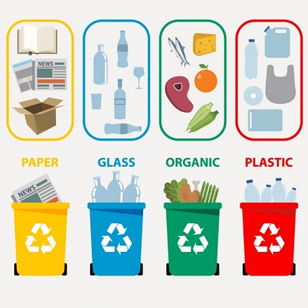

Reciclaje
su importancia y beneficios que trae con él
El reciclaje:
El reciclaje es un proceso cuyo objetivo es convertir residuos en nuevos productos o en materia
prima para su posterior utilización.
Gracias al reciclaje se previene el desuso de materiales potencialmente útiles, se reduce el consumo
de nueva materia prima, además de reducir el uso de energía, la contaminación del aire (a través de la incineración)
y del agua (a través de los vertederos), así como también disminuir las emisiones de gases de efecto invernadero en
comparación con la producción de plásticos.
El reciclaje es un componente clave en la reducción de desechos contemporáneos y es el tercer componente
de las 3R («Reducir, Reutilizar y Reciclar»).
Los materiales reciclables son muchos, e incluyen todo el papel y cartón, el vidrio, los metales ferrosos
y no ferrosos, algunos plásticos, telas y textiles, maderas y componentes electrónicos. En otros casos no es
posible llevar a cabo un reciclaje debido a la dificultad técnica o alto coste del proceso, de modo que suele
reutilizarse el material o los productos para producir otros materiales y se destinan a otras finalidades,
como el aprovechamiento energético.
También es posible realizar un salvamento de componentes de ciertos productos complejos, ya sea por su valor
intrínseco o por su naturaleza peligrosa.
Para hablar sobre el reciclaje es importante conocer sobre cuáles son los factores contaminantes en los
cuales debemos tener conciencia para al igual cuidar el medio ambiente y acabar con la contaminación mundial.
De los cuales nos referimos:
Aire: en donde se acumula todos los olores y los contaminantes de las fábricas, el tráfico, entre otras cosas.
Agua: en donde la sociedad contamina con más frecuencia ya que ahí, la sociedad es causante por tirar sus
residuos, tirar productos contaminantes y hacer sus trabajos de industria.
Utilización de la energía: en los cuales conforme va creciendo la sociedad se van generando fabricaciones de
cualquier tipo de los cuales contaminan el medio ambiente.
Cadena de reciclaje:
La cadena de reciclado consta de varias etapas:
Recuperación o recogida: que puede ser realizada por empresas públicas o privadas. Consiste únicamente en la recolección y
transporte de los residuos hacia el siguiente eslabón de la cadena. Se utilizan contenedores urbanos de recogida selectiva
(contenedores amarillo, verde, azul, gris y marrón).
Plantas de transferencia: se trata de un eslabón y obligatorio que no siempre se usa. Aquí se mezclan los residuos para realizar
transportes mayores a menor costo (usando contenedores más grandes o compactadores más potentes).
Plantas de clasificación (o separación): donde se clasifican los residuos y se separan los valorizables. Residuos que sí pueden
reciclarse de los que no. La fracción que no puede reciclarse se lleva a aprovechamiento energético o a vertederos
Reciclador final (o planta de valoración): donde finalmente los residuos se reciclan (papeleras, plastiqueros, etc.), se
almacenan (vertederos) o se usan para producción de energía (cementeras, biogás, etc.).
Para la separación en origen doméstico se usan contenedores de distintos colores ubicados en entornos urbanos o rurales:
Contenedor amarillo (envases): En este se deben depositar todo tipo de envases ligeros como los envases de plásticos
(botellas, tarrinas, bolsas, bandejas, etc.), de latas (bebidas, conservas, etc.) En general, deben depositarse todos
aquellos envases comercializados en el mercado nacional e identificados por el símbolo del punto verde.
Contenedor azul (papel y cartón): En este contenedor se deben depositar los envases de cartón (cajas, bandejas, etc.), así
como los periódicos, revistas, papeles de envolver, propaganda, etc. Es aconsejable plegar las cajas de manera que ocupen
el mínimo espacio dentro del contenedor y también retirar las grapas, los canutillos y los plásticos que vengan incorporados
en el papel y cartón. Si están manchados de residuos orgánicos, como por ejemplo las servilletas de papel, no deben ir en
este contenedor.
Contenedor verde (vidrio): En este contenedor se depositan envases de vidrio. Pero se debe tener en cuenta que no se puede
depositar bombillas, frascos de medicamentos, gafas, jarrones y tazas, loza, lunas de automóviles, porcelana o
cerámica, tapones, chapas o tapas de los propios tarros o botellas de vidrio, tubos y fluorescentes.
Contenedor marrón (orgánico):5 En él se depositan el resto de residuos que no tienen cabida en los grupos anteriores, fundamentalmente
desechos orgánicos catalogados como materia biodegradable.
Contenedor rojo o puntos limpios (desechos peligrosos): Como teléfonos móviles, insecticidas, pilas o baterías, aceite
comestible o aceite de vehículos, jeringas, latas de aerosol, etc.
Contenedor naranja: aceite de cocina usado.
Contenedor específico en farmacias: para la recuperación de los medicamentos caducados o que ya no se
utilizarán, incluyendo los envases.
Las 3 "R"'s
Las tres erres consisten en una práctica para alcanzar una sociedad más sostenible.
Reducir: acciones para reducir la producción de objetos susceptibles de convertirse en residuos, con medidas de
compra racional, uso adecuado de los productos, compra de productos sostenibles.
Reutilizar: acciones que permiten el volver a usar un determinado producto para darle una segunda vida, con el
mismo uso u otro diferente. Medidas encaminadas a la reparación de productos y alargar su vida útil.
Reciclar: el conjunto de operaciones de recogida y tratamiento de residuos que permiten reintroducirlos en un
ciclo de vida. Se utiliza la separación de residuos en origen para facilitar los canales adecuados.
Beneficios y costos
Según el Estudio de Información Económica de Reciclaje de Estados Unidos
hay más de 50 000 establecimientos de reciclaje que han creado más de un millón de empleos en los EE. UU.
Años después de que la Ciudad de Nueva York declarara que la implementación de programas de reciclaje sería
"un drenaje en la ciudad", los líderes de la Ciudad de Nueva York se dieron cuenta de que un sistema eficiente
de reciclaje podría salvar a la ciudad más de 20 millones de dólares.
Solo la industria del reciclaje automotriz en Estados Unidos emplea alrededor de 100 000 personas por año.

mas informacion sobre diversos temas: